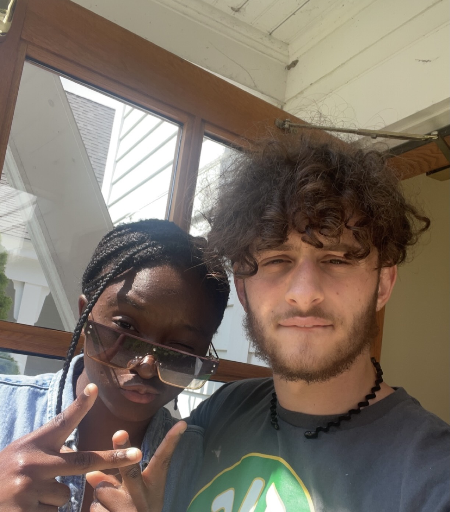
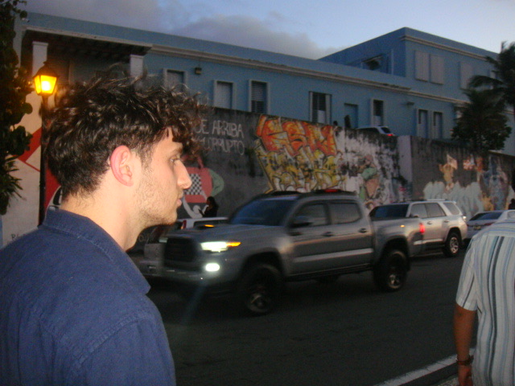

Welcome to Bijan Sharifi's Personal Website



About me
I'm a computer science major who will soon be a junior at The University of Maryland College Park. I'm anxiously looking for an internship in programming for the summer of 2024 because I have a keen interest in bioinformatics and the development of AI. When I enrolled in CMSC 131, UMD's first core computer science course, my interest in the field suddenly took off. I had no prior programming experience, but I was motivated to achieve despite the difficulties. I took up fundamental duties and ideas as I progressed through the training, gradually increasing confidence. I still clearly remember the moment when I finally understood how to loop around an array and apply values. I now grin when I reflect on how far I've come since then and I'm enthusiastic about the continued growth that lies ahead. I've had the chance to work on a variety of projects during my education (see below). My aptitude for finding creative ideas and problem-solving skills have improved as a result of these experiences. Beyond academics, I devote a lot of time to basketball, fitness, and spending time with family and friends. I actively engage in community-building initiatives as a follower of The Baha'i Faith, working to help create a more harmonious world. I'm excited about the always changing opportunities in the field of computer science and I'm keen to put my knowledge and talents to use during a summer internship in 2024. If you want to view more of my work, feel free to look through my website!